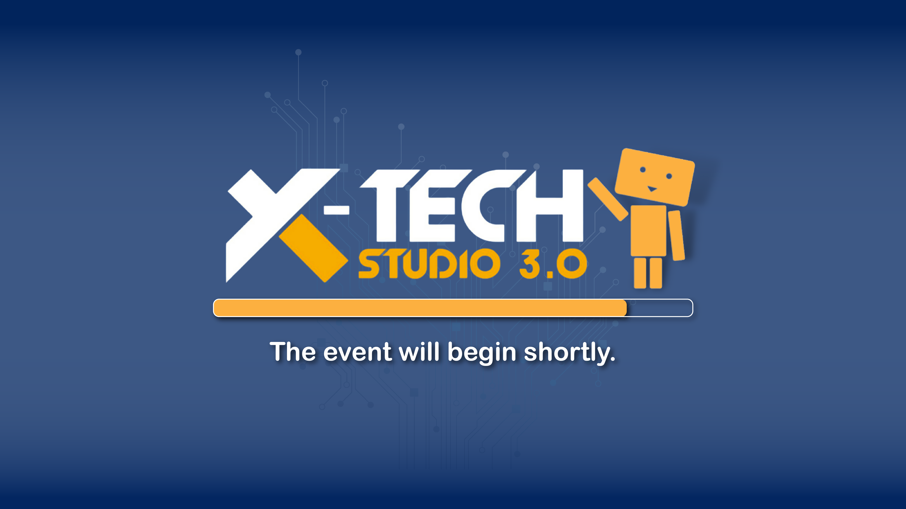

3.0
What is X-tech?
Learn about X-Tech Nepal is still too far behind developed countries, especially in technology and innovation, in this era of the rapidly evolving field of technology. To make an impact, improve technical proficiency and enhance student skills. EXCESS decided to hold an annual event called X-Tech. X-Tech is one of the best engineering tech festivals. X-Tech has offered a platform for electronics and tech students to compete, show off their skills, and learn. Workshops, competitions, and training such as IoT and Automation Workshops, Hardware Hackathon and Smart Digital Room competitions, Robotics Events and Project Demonstration were all part of X-Tech events. X-Tech is about more than just techies. Other activities include a presentation competition, quizzes, talk shows, personal development webinars, entertainment activities such as music and dance and many more.
Why X-Tech?
X-Tech intends to improve technical and non-technical skills essential in the industry. X-Tech has established a strong presence in Nepal's Eastern Region. Previously, technical events were limited to Kathmandu Valley. X-Tech significantly improved students' skills from IOE, Purwanchal Campus and other institutes. X-Tech was required to promote technical and non-technical skills for all students. X-Tech vision is to build a better and more effective platform for all students in the technical field. X-tech assists students in becoming industry and corporate-ready. X-Tech helps students to excel in the technical and non-technical areas through competitions, workshops and events
History of X-Tech.
X-Tech 1.0
Season 1 of X-Tech began in 2074 B.S Magh. It is one of the most significant achievements
in X-Tech history. The event was a smashing success. At the time, our chief guest was
Mahabir Pun. Smart-Digital Room was an event focused on making a Smart-Room, utilizing
digital technology. It was a contest. Daily media quizzes assist users in becoming more
attached to the event. Seminars and IoT workshops assisted students in expanding their
knowledge of various emerging fields. The presentation competition allowed students to
come forward, express their ideas, and showcase their skills and thoughts in different
scenarios. Extra events made the festival more of a learning and fun experience.
Approximately 4,000 Students and external visitors benefited directly or indirectly from the
event. This event includes more than 100 participants.
Events:
Extra Events:
X-Tech 2.0
Because of Covid 19, the second season of X-Tech was held online on Ashoj 2077. X-Tech
continues to run events online to promote the technology. Technovate was an online project-based competition with a pandemic response theme. Online Circuit Designing Competitions
were our highlights. The experience-sharing session about industry experience helped
students level up and learn new things about the industry. It was a huge success. Throughout
the event, there were over 150 participants and thousands of viewers from all over Nepal.
X-Tech 3.0
X-Tech Studio 3.0 is the third edition of X-Tech Studio, a yearly tech fest
organized by EXCESS. With the goal of building a competitive platform for
students to demonstrate and improve their abilities, gain real-world experience,
and apply their knowledge, we concluded with the theme, "Smart, Secure, and
Decentralized Innovation : Reshaping the Future."
EXCESS is ready to organize “X-Tech Studio 3.0: A Competitive Platform for
all”. It will be one of the biggest tech fests in the Eastern Region. We are
immensely proud and happy to announce “X-Tech Studio 3.0: A Competitive
Platform for All”. It will include workshops, seminars, webinars, exhibitions,
hackathons, and competitive events. We will also have different recreational
activities and lots of engagement through Digital and Physical presence with
participation from a wide range of students.
Pre Events:
X-Tech Quiz
X-Tech Quiz will get organized through the social media handles of EXCESS. It will involve various electronics-related questions and puzzles. We aim to include all the students from electronics engineering backgrounds beyond the bounds of campus.
Satellite
This workshop will include students interested in satellite communication and space. Such events are getting organized for the first time in Eastern Nepal. With recent achievements and progress of our country in the field, we aim to spread the knowledge to a greater audience and interested students

Matlab
We will be organizing the training of Matlab Simulation focusing on specific projects providing all the knowledge required to build the project. After the completion of training, we will have a competition. The competition will be open to all.

ML/AI
Machine Learning is one of the most talked about topics in modern tech industries. With the introduction of the workshops on Machine Learning, we can include all the tech students in the event.

Security
Addressing the recent shift of interest of most tech students, we are organizing a seminar/webinar to be inclusive to students of interest.

Hackathon
Participants should build a project on a fixed theme with limited hardware within a limited time. All the required material during the event is to be provided by EXCESS. The project will be demonstrated in the exhibition and presented to Hackathon juries. The winner announcement will be during the X-Tech ceremony.
Robotics
The Robotics Event has always been an intricate part of the X-Tech Studio. Held at the college ground in collaboration with Robotics Club, Purwanchal Campus, There will be at least one robotic event and competition in X-Tech Studio 3.0.

PCB
It is also one of the training we have been providing annually to the interested students of IOE, Purwanchal Campus. This training will also eventually lead to competition. We aim to make a platform for the trainees to showcase what they have learned. The competition will be open to other than trainees as well.